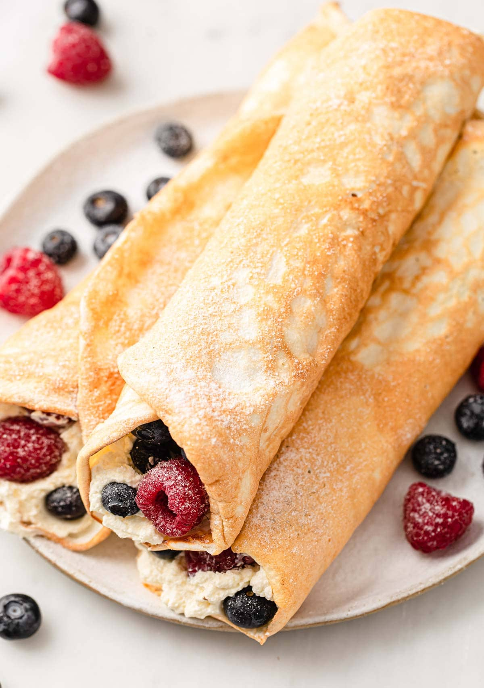

Crepe

The perfect recipe for breakfast, lunch or dinner.
Crepes are amazing, you can eat them at any time, use so many different flours, serve them with almost anything
and don't require a lot of work to make them. I'm gonna recommend my favourite ones.
Ingredients
- 1 cup of oats
- 1 banana
- 3 eggs
- 1 tbsp. baking powder
- Some salt
- Cinnamon to taste
- 1-2 scoops of protein powder of your preference
- Some milk
Directions
- Mix everything together in a blender, in medium low speed.
- Heat a griddle or a pan to medium heat. Add the batter slowly in small circles. You can
add some chocolate chips if you want. When the edges start looking dry, flip them for another minute or two.
- Now the rest is to your imagination, add maple syrup, jam, peanut butter, honey, nutella, fruit jams, whatever you feel like.